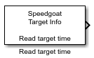

Read target time
Read target time
Library
Simulink Real-Time - Speedgoat/Utilities

Description
This block reads the current time of the target machine.
Supported Target Machines
This block supports all Speedgoat real-time target machines.
Ports
Outputs
-
The Read target time block has one output port which represents the
serial date number format [double], also known as datenum format in
MATLAB.
Parameters
-
Sample Time
Defines the base sample time at which this driver block gets its sample hit. This
parameter can also be set to -1 for inherited
sample time. The units are in seconds.